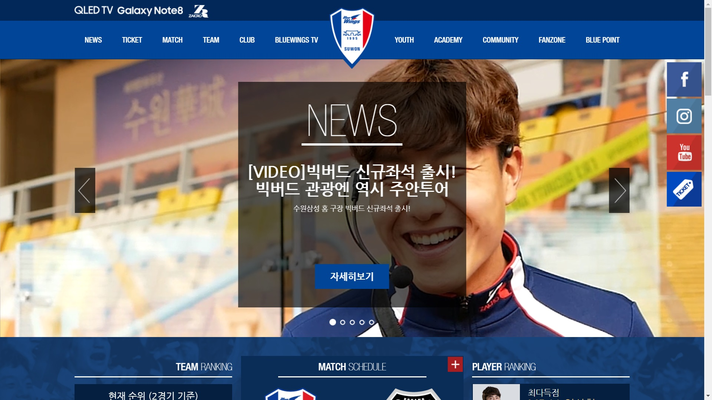

잡지 'GQ'
포스트에서 사진에 중요성을 보여주는 퀄리티에 사진.
화려하진 않지만 주제목 소제목 그리고 강조할 부분을 잘 나타내서 내용이 작성되어 있다.

유니클로
제품이 부각돠는 사진들로 페이지를 구성하였다.
제품을 구매할때 중요한 조건인 가격정보가 보기쉽게 나타내어져 있다.
수원 삼성 블루윙즈
팀의 팬들이 알고싶어 할 만한 정보들을 잘 배치 해 놓았다.
기사에 주요 헤드라인과 내용을 요약해놓아서 접근하기 쉽게 만들었다.

웹진 '타이포그래피 서울'
인터뷰에 대상이 누구의 어떠한것인지 잘 나타져 있다.
기사가 어떤 주제에 기사인지 강조를 통해서 나타내 놓았다.